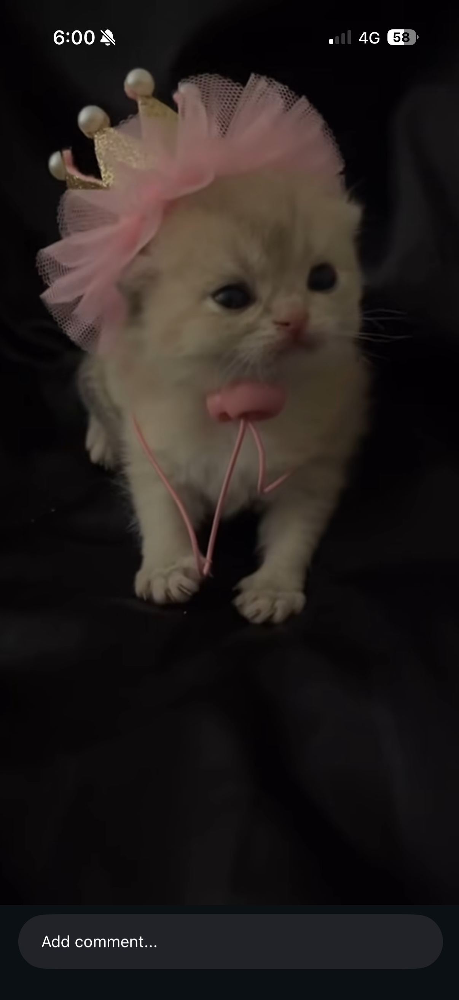
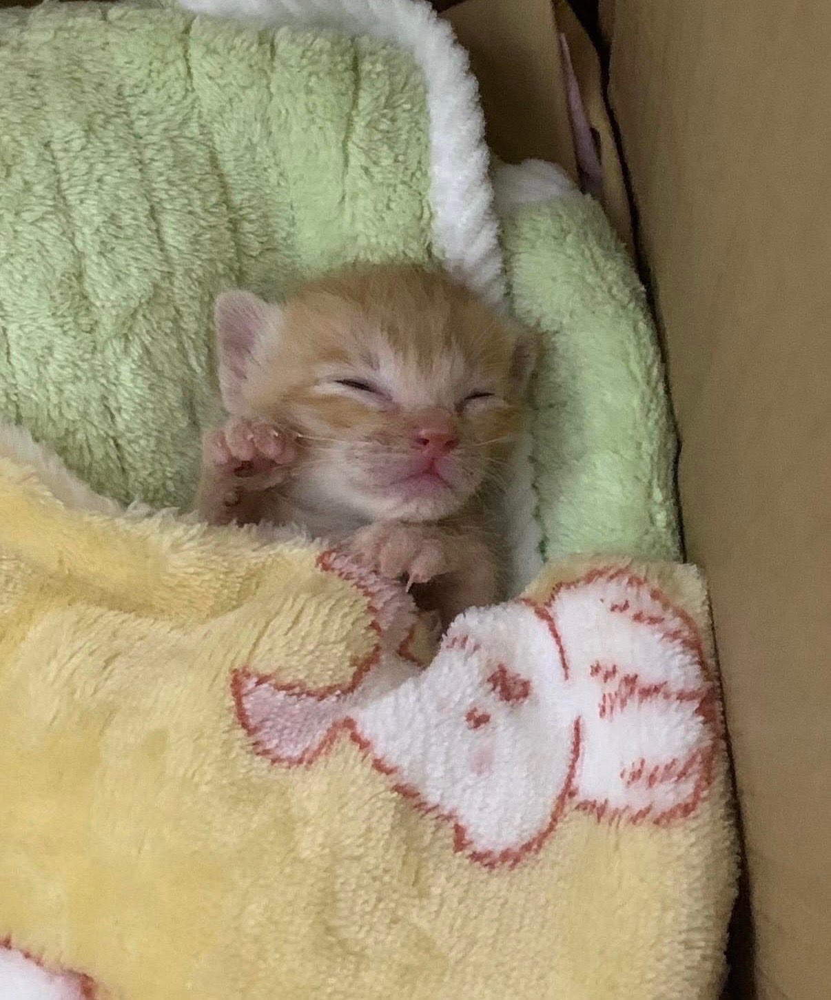

the gallery
cute cats only.
a very curated, very important collection.






香港 · cat person
the gallery
a very curated, very important collection.


wouldn't it be nice to be a cat —
soft life, no worries,
just sleeping in warm places
and being loved.
— tiffany ngan, probably